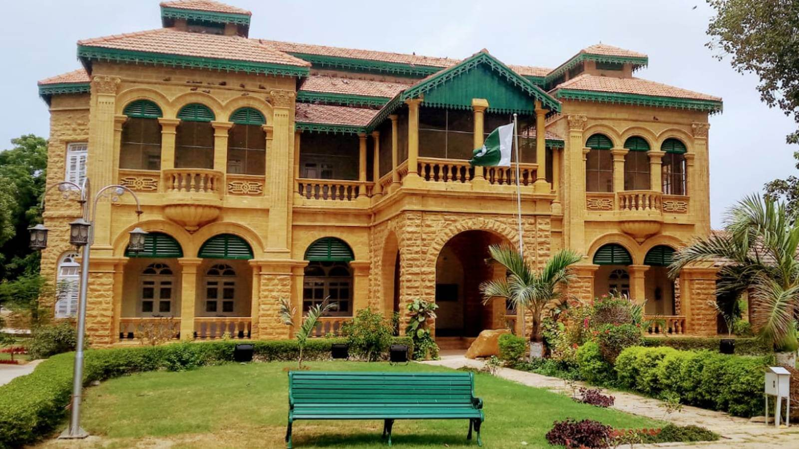

Historic Buildings
These buildings have been part of Karachi for a long time. Each one shows a different side of the city's past.

Frere Hall
Completed in 1865 and named after Sir Henry Bartle Frere. It was built in the Venetian Gothic style and is now surrounded by a public garden.

Mohatta Palace
Built in 1927 for Shivratan Mohatta, a businessman. It is known for its pink stone and is now a museum.

Empress Market
Finished in 1889 in Saddar and named after Queen Victoria. It is still a busy market today.

Merewether Tower
A clock tower built in 1892 and named after Sir William Merewether, a British official in Sindh.

Wazir Mansion
The birthplace of Muhammad Ali Jinnah, who was born in Karachi in 1876.